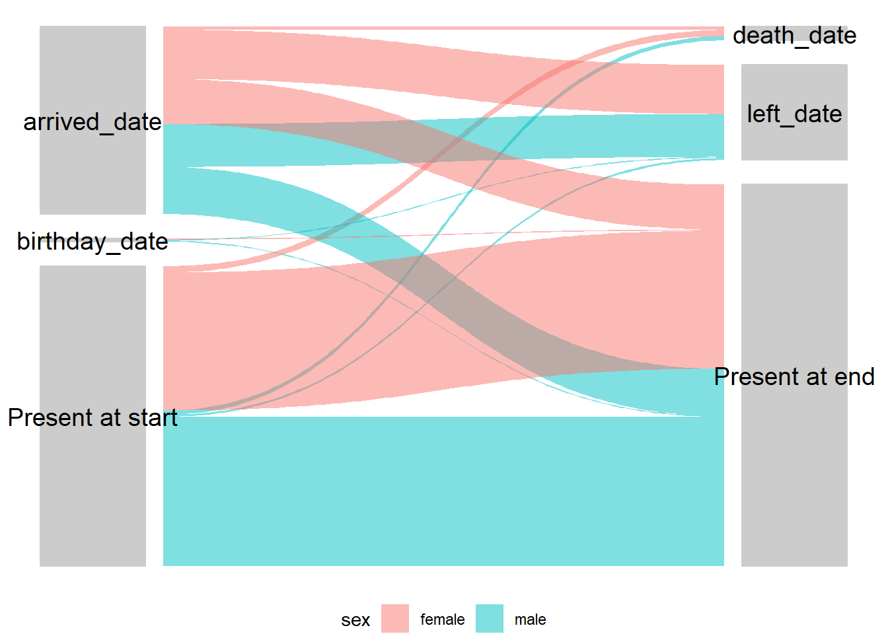

25 Analyse d’enquête
25.1 Aperçu
Cette page démontre l’utilisation de plusieurs packages pour l’analyse d’enquêtes.
La plupart des paquets R d’enquête reposent sur le paquet survey pour effectuer des analyses pondérées. Nous utiliserons survey ainsi que srvyr (une enveloppe pour survey permettant un codage de type tidyverse) et gtsummary (une enveloppe pour survey permettant de créer des tableaux prêts à être publiés).Bien que le paquet original survey ne permette pas le codage de style tidyverse, tidyverse, il présente l’avantage supplémentaire d’autoriser les modèles linéaires généralisés pondérés par les pondérés par les enquêtes (qui seront ajoutés à cette page à une date ultérieure). Nous allons également démontrer l’utilisation d’une fonction du paquet sitrep pour créer des poids d’échantillonnage (n.b ce paquet n’est pas encore sur CRAN, mais peut être installé à partir de github).
La plupart de cette page est basée sur le travail effectué pour le projet “R4Epis” ; pour le code détaillé et les modèles R-markdown, voir la page github [“R4Epis”] (https://github.com/R4EPI/sitrep). Une partie du code basé sur le paquet survey est basé sur les premières versions de Études de cas EPIET.
Pour l’instant, cette page ne traite pas du calcul de la taille des échantillons ou de l’échantillonnage. Pour un calculateur de taille d’échantillon simple à utiliser, voir OpenEpi. La page GIS basics du manuel comportera éventuellement une section sur l’échantillonnage aléatoire spatial, et cette page comportera éventuellement une section sur les cadres d’échantillonnage. Cette page contiendra également une section sur les bases de sondage ainsi que sur le calcul de la taille des échantillons.
- Données d’enquête
- Temps d’observation
- Pondération
- Objets de la conception de l’enquête
- Analyse descriptive
- Proportions pondérées
- Taux pondérés
25.2 Préparation
Paquets
Ce morceau de code montre le chargement des paquets nécessaires aux analyses. Dans ce manuel, nous mettons l’accent sur p_load() de pacman, qui installe le paquet si nécessaire et le charge pour l’utiliser. Vous pouvez également charger des paquets avec library() depuis base R. Voir la page sur [R basics] pour plus d’informations sur les paquets R.
Ici, nous démontrons également l’utilisation de la fonction p_load_gh() de pacman pour installer et charger un paquet de github qui n’a pas encore été publié sur CRAN.
## charger des paquets depuis CRAN
pacman::p_load(rio, # Importation du fichier
here, # Localisation de fichiers
tidyverse, # gestion des données + graphiques ggplot2
tsibble, # gère les ensembles de données de séries temporelles
survey, # pour les fonctions d'enquête
srvyr, # wrapper dplyr pour le paquet d'enquête
gtsummary, # wrapper pour le paquet d'enquête pour produire des tableaux
apyramid, # un paquet dédié à la création de pyramides des âges
patchwork, # pour combiner des ggplots
ggforce # pour les tracés alluviaux/sankey
)
## charger les paquets de github pour le temps d'observation / fonctions de pondération
if(!require(sitrep)){
remotes::install_github("r4epi/sitrep")
library(sitrep)
}Charger les données
L’ensemble de données d’exemple utilisé dans cette section :
- des données fictives d’enquête de mortalité.
- comptes de population fictifs pour la zone d’enquête.
- Dictionnaire de données pour les données fictives de l’enquête sur la mortalité.
Ceci est basé sur l’enquête pré-approuvée par le comité d’examen éthique de MSF OCA. Le site données fictives ont été produites dans le cadre du projet “R4Epis”. Tout ceci est basé sur les données collectées à l’aide de KoboToolbox, qui est un logiciel de collecte de données basé sur Open Data Kit.
Kobo vous permet d’exporter à la fois les données collectées et le dictionnaire de données pour cet ensemble de données. Nous vous recommandons vivement de le faire, car cela simplifie le nettoyage des données et est utile pour rechercher des variables/questions.
TIP: Le dictionnaire de données de Kobo comporte des noms de variables dans la colonne “nom” de la feuille d’enquête. Les valeurs possibles pour chaque variable sont spécifiées dans la feuille de choix. Dans la feuille de choix, “name” a la valeur abrégée et les colonnes “label::english” et “label::french” ont les versions longues appropriées. L’utilisation de la fonction msf_dict_survey() du paquet epidict pour importer un fichier Excel du dictionnaire Kobo sera reformaté pour vous afin de pouvoir l’utiliser facilement pour le recodage.
CAUTION: Le jeu de données d’exemple n’est pas le même comme un export (comme dans Kobo vous exportez différents niveaux de questionnaire individuellement). - voir la section sur les données d’enquête ci-dessous pour fusionner les différents niveaux.
Le jeu de données est importé à l’aide de la fonction import() du paquet rio. Consultez la page Importation et exportation pour connaître les différentes façons d’importer des données.
# Importez les données d'enquête
survey_data <- rio::import("survey_data.xlsx")
# Importez le dictionnaire dans R
survey_dict <- rio::import("survey_dict.xlsx") Les 10 premières lignes de l’enquête sont affichées ci-dessous.
Nous voulons également importer les données sur la population d’échantillonnage afin de pouvoir produire des pondérations appropriées. Ces données peuvent se présenter sous différents formats. Cependant, nous vous suggérons de les présenter comme suit (vous pouvez simplement les saisir dans un excel).
# Importez les données de la population
population <- rio::import("population.xlsx")Les 10 premières lignes de l’enquête sont affichées ci-dessous.
Pour les enquêtes en grappes, vous pouvez souhaiter ajouter des poids d’enquête au niveau de la grappe. Vous pouvez lire ces données comme ci-dessus. Alternativement, s’il n’y a que quelques comptages, ils peuvent être entrés comme suit dans un tibble. Dans tous les cas, vous aurez besoin d’avoir une colonne avec un identifiant de grappe qui correspondant à vos données d’enquête, et une autre colonne avec le nombre de ménages dans chaque grappe.
## définir le nombre de ménages dans chaque cluster
cluster_counts <- tibble(cluster = c("village_1", "village_2", "village_3", "village_4",
"village_5", "village_6", "village_7", "village_8",
"village_9", "village_10"),
households = c(700, 400, 600, 500, 300,
800, 700, 400, 500, 500))Nettoyer les données
L’exemple ci-dessous permet de s’assurer que la colonne date est au bon format. Il existe plusieurs autres façons de procéder (voir la page Travailler avec des dates pour plus de détails), mais l’utilisation du dictionnaire pour définir les dates est rapide et facile.
Nous créons également une variable de groupe d’âge en utilisant la fonction age_categories() de epikit - voir la section Nettoyage de données et fonctions essentielles pour plus de détails. De plus, nous créons une variable de caractère définissant dans quel district se trouvent les différents clusters.
Enfin, nous recodons toutes les variables oui/non en variables VRAI/FAUX, sinon elles ne peuvent pas être utilisées par les fonctions de proportion survey.
## sélectionne les noms de variables de date dans le dictionnaire
DATEVARS <- survey_dict %>%
filter(type == "date") %>%
filter(name %in% names(survey_data)) %>%
## filtre pour correspondre aux noms des colonnes de vos données
pull(name) # sélectionne les variables de date
## changer en dates
survey_data <- survey_data %>%
mutate(across(all_of(DATEVARS), as.Date))
## ajouter ceux dont l'âge est uniquement en mois à la variable année (diviser par douze).
survey_data <- survey_data %>%
mutate(age_years = if_else(is.na(age_years),
age_months / 12,
age_years))
## définir la variable groupe d'âge
survey_data <- survey_data %>%
mutate(age_group = age_categories(age_years,
breakers = c(0, 3, 15, 30, 45)
))
## créer une variable caractère basée sur les groupes d'une autre variable
survey_data <- survey_data %>%
mutate(health_district = case_when(
cluster_number %in% c(1:5) ~ "district_a",
TRUE ~ "district_b"
))
## sélectionner les noms de variables oui/non dans le dictionnaire
YNVARS <- survey_dict %>%
filter(type == "yn") %>%
filter(name %in% names(survey_data)) %>%
## filtre pour correspondre aux noms des colonnes de vos données
pull(name) # select yn vars
## changer en dates
survey_data <- survey_data %>%
mutate(across(all_of(YNVARS),
str_detect,
pattern = "yes"))25.3 Données d’enquête
Il existe de nombreux plans d’échantillonnage différents qui peuvent être utilisés pour les enquêtes. Ici, nous allons démontrer le code pour : - Stratifié - en grappes - Stratifié et grappe
Comme décrit ci-dessus (en fonction de la façon dont vous concevez votre questionnaire), les données de chaque niveau seront exportées comme un ensemble de données séparé de Kobo. Dans notre exemple, il y a un niveau pour les ménages et un niveau pour les individus au sein de ces ménages.
Ces deux niveaux sont liés par un identifiant unique. Pour un ensemble de données Kobo, cette variable est “_index” au niveau du ménage, qui correspond à “_parent_index” au niveau de l’individu. Cela créera de nouvelles lignes pour le ménage avec chaque individu correspondant, voir la section du manuel sur Joindre des données pour plus de détails.
## Joignez les données des individus et des ménages pour former un ensemble de données complet.
survey_data <- left_join(survey_data_hh,
survey_data_indiv,
by = c("_index" = "_parent_index"))
## créer un identifiant unique en combinant les index des deux niveaux
survey_data <- survey_data %>%
mutate(uid = str_glue("{index}_{index_y}"))25.4 Temps d’observation
Pour les enquêtes de mortalité, nous voulons maintenant savoir combien de temps chaque individu a été présent dans l’emplacement afin de pouvoir calculer un taux de mortalité approprié pour notre période d’intérêt. Ceci n’est pas pertinent pour toutes les enquêtes, mais particulièrement pour les enquêtes de mortalité, car elles sont fréquemment menées auprès de populations mobiles ou déplacées.
Pour ce faire, nous définissons d’abord notre période d’intérêt, également connue sous le nom de période de rappel (c’est-à-dire le moment où l’enquête est menée). Nous pouvons ensuite utiliser cette période pour définir des dates inappropriées comme manquantes, c’est-à-dire que si des décès sont signalés en dehors de la période d’intérêt.
## Définit le début/la fin de la période de rappel.
## peut être changé en variables de date provenant de l'ensemble de données
## (par exemple, date d'arrivée et date du questionnaire)
survey_data <- survey_data %>%
mutate(recall_start = as.Date("2018-01-01"),
recall_end = as.Date("2018-05-01")
)
# Définir les dates inappropriées à NA sur la base de règles
## par exemple, arrivées avant le début, départs après la fin.
survey_data <- survey_data %>%
mutate(
arrived_date = if_else(arrived_date < recall_start,
as.Date(NA),
arrived_date),
birthday_date = if_else(birthday_date < recall_start,
as.Date(NA),
birthday_date),
left_date = if_else(left_date > recall_end,
as.Date(NA),
left_date),
death_date = if_else(death_date > recall_end,
as.Date(NA),
death_date)
)Nous pouvons ensuite utiliser nos variables de date pour définir les dates de début et de fin pour chaque individu. Nous pouvons utiliser la fonction find_start_date() de sitrep pour affiner les causes des les dates et ensuite utiliser cela pour calculer la différence entre les jours (personne-temps).
Date de début : L’événement d’arrivée approprié le plus tôt dans votre période de rappel. Soit le début de votre période de rappel (que vous définissez à l’avance), soit une date après le début de la période de rappel, le cas échéant (par exemple, les arrivées ou les naissances).
Date de fin : Soit la fin de votre période de rappel, soit une date antérieure à la fin du rappel.
## Créer de nouvelles variables pour les dates/causes de début et de fin.
survey_data <- survey_data %>%
## choisir la date la plus ancienne saisie dans l'enquête.
## à partir des naissances, des arrivées dans les ménages et des arrivées dans les camps.
find_start_date("birthday_date",
"arrived_date",
period_start = "recall_start",
period_end = "recall_end",
datecol = "startdate",
datereason = "startcause"
) %>%
## choisir la date la plus ancienne saisie dans l'enquête
## à partir des départs du camp, des décès et de la fin de l'étude
find_end_date("left_date",
"death_date",
period_start = "recall_start",
period_end = "recall_end",
datecol = "enddate",
datereason = "endcause"
)
## étiqueter ceux qui étaient présents au début/à la fin (sauf les naissances/décès)
survey_data <- survey_data %>%
mutate(
## remplir la date de début pour qu'elle corresponde au début de la période de rappel (pour ceux qui sont vides)
startdate = if_else(is.na(startdate), recall_start, startdate),
## définir la cause de début comme présente au début si elle est égale à la période de rappel
## sauf si elle est égale à la date de naissance
startcause = if_else(startdate == recall_start & startcause != "birthday_date",
"Present at start", startcause),
## remplir la date de fin pour qu'elle corresponde à la fin de la période de rappel (pour ceux qui sont vides)
enddate = if_else(is.na(enddate), recall_end, enddate),
## définir la cause de fin comme étant présente à la fin si égale à la fin de rappel
## sauf si elle est égale à la date de décès
endcause = if_else(enddate == recall_end & endcause != "death_date",
"Present at end", endcause))
## Définir la durée d'observation en jours
survey_data <- survey_data %>%
mutate(obstime = as.numeric(enddate - startdate))25.5 Pondération
Il est important d’éliminer les observations erronées avant d’ajouter les poids de l’enquête. Par exemple, si vous avez des observations avec un temps d’observation négatif, vous devrez les vérifier (vous pouvez le faire avec la fonction assert_positive_timespan() de sitrep. Une autre chose est si vous voulez supprimer les lignes vides (par exemple avec drop_na(uid)) ou supprimer les doublons (voir la section du manuel sur la déduplication pour plus de détails). Ceux qui n’ont pas de consentement doivent aussi être supprimés.
Dans cet exemple, nous filtrons les cas que nous voulons supprimer et les stockons dans un cadre de données séparé - de cette façon, nous pouvons décrire ceux qui ont été exclus de l’enquête. Nous utilisons ensuite la fonction anti_join() de dplyr pour supprimer ces cas exclus de nos données d’enquête.
DANGER: Vous ne pouvez pas avoir de valeurs manquantes dans votre variable de poids, ni dans aucune des variables pertinentes pour le plan de sondage (par exemple, les variables d’âge, de sexe, de strates ou de grappes).
## stockez les cas que vous abandonnez afin de pouvoir les décrire (par exemple, non-consentant.
## ou mauvais village/cluster)
dropped <- survey_data %>%
filter(!consent | is.na(startdate) | is.na(enddate) | village_name == "other")
## utiliser les cas abandonnés pour supprimer les lignes inutilisées de l'ensemble des données de l'enquête.
survey_data <- anti_join(survey_data, dropped, by = names(dropped))Comme mentionné ci-dessus, nous montrons comment ajouter des poids pour trois plans d’étude différents (stratifié, en grappe et en grappe stratifié). Ceux-ci nécessitent des informations sur la population source et/ou les grappes enquêtées. Nous utiliserons le code de la grappe stratifiée pour cet exemple, mais utilisez celui qui est le plus approprié à votre plan d’étude.
# stratified ------------------------------------------------------------------
# Créez une variable appelée "surv_weight_strata".
# contient les poids pour chaque individu - par groupe d'âge, sexe et district sanitaire.
survey_data <- add_weights_strata(x = survey_data,
p = population,
surv_weight = "surv_weight_strata",
surv_weight_ID = "surv_weight_ID_strata",
age_group, sex, health_district)
## cluster ---------------------------------------------------------------------
# obtient le nombre de personnes d'individus interrogés par ménage
# ajoute une variable avec les comptes de la variable index du ménage (parent)
survey_data <- survey_data %>%
add_count(index, name = "interviewed")
## crée des poids de cluster
survey_data <- add_weights_cluster(x = survey_data,
cl = cluster_counts,
eligible = member_number,
interviewed = interviewed,
cluster_x = village_name,
cluster_cl = cluster,
household_x = index,
household_cl = households,
surv_weight = "surv_weight_cluster",
surv_weight_ID = "surv_weight_ID_cluster",
ignore_cluster = FALSE,
ignore_household = FALSE)
# stratifié et cluster ------------------------------------------------------
# créer un poids d'enquête pour la grappe et les strates
survey_data <- survey_data %>%
mutate(surv_weight_cluster_strata = surv_weight_strata * surv_weight_cluster)25.6 Objets de conception d’enquête
Créez un objet d’enquête en fonction de la conception de votre étude. Utilisé de la même manière que les cadres de données pour calculer les proportions de poids, etc. Assurez-vous que toutes les variables nécessaires sont créées avant cela.
Il y a quatre options, commentez celles que vous n’utilisez pas : - aléatoire simple - Stratifié - en grappe - Grappe stratifiée
Pour ce modèle, nous supposerons que nous regroupons les enquêtes dans deux strates distinctes (districts sanitaires A et B). Pour obtenir des estimations globales, nous devons donc combiner les poids des grappes et des strates.
Comme nous l’avons mentionné précédemment, il existe deux paquets disponibles pour ce faire. Le classique est survey et il existe un paquetage appelé srvyr qui crée des objets et des fonctions adaptés à tidyverse. Nous ferons la démonstration des deux, mais notez que la plupart du code de ce chapitre utilisera des objets basés sur srvyr. La seule exception est que le paquet gtsummary n’accepte que les objets survey.
25.6.1 Paquet **Survey
Le paquet survey utilise effectivement le codage base R, et il n’est donc pas possible d’utiliser les pipes (%>%) ou d’autres syntaxes dplyr. Avec le paquetage survey, nous utilisons la fonction svydesign() pour définir un objet d’enquête avec les clusters, les poids et les strates appropriés.
NOTE: nous devons utiliser le tilde (~) devant les variables, ceci parce que le package utilise la syntaxe base R d’affectation des variables basée sur des formules.
# aléatoire simple ---------------------------------------------------------------
base_survey_design_simple <- svydesign(ids = ~1, # 1 pour aucun id de grappe
weights = NULL, # aucun poids ajouté
strata = NULL, # l'échantillonnage est simple (pas de strates)
data = survey_data # doit spécifier l'ensemble de données
)
## stratified ------------------------------------------------------------------
base_survey_design_strata <- svydesign(ids = ~1, # 1 pour aucun id de cluster
weights = ~surv_weight_strata, # variable de poids créée ci-dessus
strata = ~health_district, # l'échantillonnage a été stratifié par district
data = survey_data # il faut spécifier l'ensemble de données
)
# cluster ---------------------------------------------------------------------
base_survey_design_cluster <- svydesign(ids = ~village_name, # ids de cluster
weights = ~surv_weight_cluster, # variable de poids créée ci-dessus
strata = NULL, # l'échantillonnage était simple (pas de strates)
data = survey_data # il faut spécifier l'ensemble de données
)
# cluster stratifié ----------------------------------------------------------
base_survey_design <- svydesign(ids = ~village_name, # ids de cluster
weights = ~surv_weight_cluster_strata, # variable de poids créée ci-dessus
strata = ~health_district, # l'échantillonnage a été stratifié par district
data = survey_data # doit spécifier l'ensemble de données
)25.6.2 Paquet **Srvyr
Avec le paquet srvyr, nous pouvons utiliser la fonction as_survey_design(), qui a les mêmes arguments que ci-dessus, mais autorise les tubes (%>%), et nous n’avons donc pas besoin d’utiliser le tilde (%>%).
## aléatoire simple ---------------------------------------------------------------
survey_design_simple <- survey_data %>%
as_survey_design(ids = 1, # 1 pour aucun id de grappe
weights = NULL, # Aucun poids ajouté
strata = NULL # l'échantillonnage était simple (pas de strates)
)
## stratified ------------------------------------------------------------------
survey_design_strata <- survey_data %>%
as_survey_design(ids = 1, # 1 pour aucun id de cluster
weights = surv_weight_strata, # variable de poids créée ci-dessus
strata = health_district # l'échantillonnage a été stratifié par district
)
## cluster ---------------------------------------------------------------------
survey_design_cluster <- survey_data %>%
as_survey_design(ids = village_name, # ids de la grappe
weights = surv_weight_cluster, # variable de poids créée ci-dessus
strata = NULL # l'échantillonnage était simple (pas de strates)
)
## cluster stratifié ----------------------------------------------------------
survey_design <- survey_data %>%
as_survey_design(ids = village_name, # ids de la grappe
weights = surv_weight_cluster_strata, # variable de poids créée ci-dessus
strata = health_district # l'échantillonnage a été stratifié par district
)25.7 Analyse descriptive
L’analyse descriptive et la visualisation de base sont traitées en détail dans d’autres chapitres du manuel, nous ne nous y attarderons donc pas ici. Pour plus de détails, voir les chapitres sur les tableaux descriptifs, les tests statistiques, les tableaux de présentation, [les bases du ggplot] (#ggplot_basics) et rapports R markdown.
Dans cette section, nous allons nous concentrer sur la manière d’étudier le biais dans votre échantillon et de le visualiser. Nous nous pencherons également sur la visualisation du flux de population dans le cadre d’une enquête à l’aide de diagrammes alluviaux/sankey.
En général, vous devriez envisager d’inclure les analyses descriptives suivantes :
- Le nombre final de grappes, de ménages et d’individus inclus.
- Nombre d’individus exclus et les raisons de cette exclusion
- Nombre médian (fourchette) de ménages par grappe et d’individus par ménage.
25.7.1 Biais d’échantillonnage
Comparez les proportions dans chaque groupe d’âge entre votre échantillon et la population source. Ceci est important pour pouvoir mettre en évidence un éventuel biais d’échantillonnage. Vous pouvez également répéter cette opération en examinant les distributions par sexe.
Notez que ces p-values ne sont qu’indicatives, et qu’une discussion descriptive (ou une visualisation avec les pyramides d’âge ci-dessous) des distributions dans votre échantillon d’étude par rapport à la population source est plus importante que le test binomial lui-même. Cela est dû au fait que l’augmentation de la taille de l’échantillon conduira le plus souvent à des différences qui peuvent ne pas être pertinentes après la pondération de vos données.
## dénombrements et saillies de la population étudiée.
ag <- survey_data %>%
group_by(age_group) %>%
drop_na(age_group) %>%
tally() %>%
mutate(proportion = n / sum(n),
n_total = sum(n))
## comptes et props de la population source
propcount <- population %>%
group_by(age_group) %>%
tally(population) %>%
mutate(proportion = n / sum(n))
## lier ensemble les colonnes de deux tables, regrouper par âge, et effectuer un
## un test binomial pour voir si n/total est significativement différent de la population
## proportion.
## Le suffixe ajoute ici du texte à la fin des colonnes dans chacun des deux ensembles de données.
left_join(ag, propcount, by = "age_group", suffix = c("", "_pop")) %>%
group_by(age_group) %>%
## broom::tidy(binom.test()) crée une trame de données à partir du test binomial et ## ajoutera les variables p.p. à la trame de données.
## ajoutera les variables p.value, parameter, conf.low, conf.high, method, and
## alternative. Nous n'utiliserons que p.value ici. Vous pouvez inclure d'autres
## d'autres colonnes si vous souhaitez faire état des intervalles de confiance.
mutate(binom = list(broom::tidy(binom.test(n, n_total, proportion_pop)))) %>%
unnest(cols = c(binom)) %>% # important pour l'expansion du cadre de données binom.test
mutate(proportion_pop = proportion_pop * 100) %>%
## Ajustement des valeurs de p pour corriger les faux positifs.
## (parce que l'on teste plusieurs groupes d'âge). Cela ne fera une
## une différence que si vous avez plusieurs catégories d'âge
mutate(p.value = p.adjust(p.value, method = "holm")) %>%
## N'affichez que les valeurs de p supérieures à 0,001 (celles qui sont inférieures sont signalées comme <0,001)
mutate(p.value = ifelse(p.value < 0.001,
"<0.001",
as.character(round(p.value, 3)))) %>%
## renommez les colonnes de manière appropriée
select(
"Groupe d'âge" = age_group,
"Population étudiée (n)" = n,
"Population étudiée (%)" = proportion,
"Population source (n)" = n_pop,
"Population source (%)" = proportion_pop,
"P-value" = p.value
)## # A tibble: 5 × 6
## # Groups: Groupe d'âge [5]
## `Groupe d'âge` `Population étudiée (n)` `Population étudiée (%)` `Population source (n)` `Population source (%)` `P-value`
## <chr> <int> <dbl> <dbl> <dbl> <chr>
## 1 0-2 12 0.0256 1360 6.8 <0.001
## 2 3-14 42 0.0896 7244 36.2 <0.001
## 3 15-29 64 0.136 5520 27.6 <0.001
## 4 30-44 52 0.111 3232 16.2 0.002
## 5 45+ 299 0.638 2644 13.2 <0.00125.7.2 Pyramides démographiques
Les pyramides démographiques (ou âge-sexe) sont un moyen facile de visualiser la distribution dans la population de votre enquête. Il est également intéressant de créer des tableaux descriptifs et le sexe par strates d’enquête. Nous allons démontrer l’utilisation du paquet apyramide car il permet de pondérées en utilisant notre objet de conception d’enquête créé ci-dessus. Autres options pour créer pyramides démographiques sont traitées en détail dans ce chapitre du manuel. Nous utiliserons également une fonction wrapper de apyramid appelée age_pyramid() qui permet de gagner quelque lignes de code pour produire un graphique avec des proportions.
Comme pour le test binomial formel de différence, vu plus haut dans la section sur le biais d’échantillonnage, nous sommes intéressés ici à visualiser si notre population échantillonnée est sensiblement différente de la population source et si la pondération corrige cette différence. Pour ce faire, nous allons utiliser le paquet patchwork pour montrer nos visualisations ggplot côte à côte ; pour plus de détails, voir la section sur la combinaison de tracés dans le chapitre du manuel Astuces de ggplot du manuel. Nous allons visualiser notre population source, notre population d’enquête non pondérée et notre population d’enquête pondérée. Vous pouvez également envisager de visualiser chaque strate de votre enquête, pars exemple ici, en utilisant l’argument stack_by = "health_district" (voir ?plot_age_pyramid pour plus de détails).
NOTE: Les axes x et y sont inversés dans les pyramides .
## définir les limites et les étiquettes de l'axe des x ---------------------------------------------
## (mettez à jour ces chiffres pour qu'ils correspondent aux valeurs de votre graphique)
max_prop <- 35 ## choisissez la plus haute proportion que vous voulez montrer
step <- 5 # choisissez l'espace que vous voulez entre les étiquettes.
## cette partie définit le vecteur en utilisant les nombres ci-dessus avec des ruptures d'axe.
breaks <- c(
seq(max_prop/100 * -1, 0 - step/100, step/100),
0,
seq(0 + step / 100, max_prop/100, step/100)
)
## cette partie définit le vecteur en utilisant les nombres ci-dessus avec les limites de l'axe
limits <- c(max_prop/100 * -1, max_prop/100)
## Cette partie définit le vecteur en utilisant les nombres ci-dessus avec les étiquettes d'axe.
labels <- c(
seq(max_prop, step, -step),
0,
seq(step, max_prop, step)
)
## créer des graphiques individuellement --------------------------------------------------
## tracer la population source
## nb : cette population doit être réduite à la population globale (c'est-à-dire en enlevant les districts de santé).
source_population <- population %>%
## s'assurer que l'âge et le sexe sont des facteurs
mutate(age_group = factor(age_group,
levels = c("0-2",
"3-14",
"15-29",
"30-44",
"45+")),
sex = factor(sex)) %>%
group_by(age_group, sex) %>%
## additionner les comptes pour chaque district de santé
summarise(population = sum(population)) %>%
## supprimer le regroupement pour pouvoir calculer la proportion globale
ungroup() %>%
mutate(proportion = population / sum(population)) %>%
## tracer la pyramide
age_pyramid(
age_group = age_group,
split_by = sex,
count = proportion,
proportional = TRUE) +
## Afficher uniquement le libellé de l'axe des y (sinon répété dans les trois graphiques)
labs(title = "Population source",
y = "",
x = "Groupe d'âge (années)") +
## rendre l'axe des x identique pour tous les graphiques
scale_y_continuous(breaks = breaks,
limits = limits,
labels = labels)
## Tracez l'échantillon de population non pondéré
sample_population <- age_pyramid(survey_data,
age_group = "age_group",
split_by = "sex",
proportion = TRUE) +
## Afficher uniquement le libellé de l'axe des x (sinon répété dans les trois graphiques)
labs(title = "Population échantillon non pondérée",
y = "Proportion (%)",
x = "") +
## rendre l'axe des x identique pour tous les graphiques
scale_y_continuous(breaks = breaks,
limits = limits,
labels = labels)
## tracer la population de l'échantillon pondéré
weighted_population <- survey_design %>%
## S'assurer que les variables sont des facteurs
mutate(age_group = factor(age_group),
sex = factor(sex)) %>%
age_pyramid(
age_group = "age_group",
split_by = "sex",
proportion = TRUE) +
## Afficher uniquement le libellé de l'axe des x (sinon répété dans les trois graphiques)
labs(title = "Echantillon de population pondéré",
y = "",
x = "") +
## rendre l'axe des x identique pour tous les graphiques
scale_y_continuous(breaks = breaks,
limits = limits,
labels = labels)
## combine les trois tracés ----------------------------------------------------
## Combinez trois tracés côte à côte en utilisant +
source_population + sample_population + weighted_population +
## ne montrer qu'une seule légende et définir le thème
## notez l'utilisation de & pour combiner le thème avec plot_layout()
plot_layout(guides = "collect") &
theme(legend.position = "bottom", # déplace la légende vers le bas
legend.title = element_blank(), # supprimer le titre
text = element_text(size = 18), # change la taille du texte
axis.text.x = element_text(angle = 45, hjust = 1, vjust = 1) # tourner le texte de l'axe x
)25.7.3 Diagramme alluvial/sankey
La visualisation des points de départ et des résultats pour les individus peut être très utile pour obtenir une vue d’ensemble. L’application est évidente pour les populations mobiles, mais il existe de nombreuses autres applications telles que les cohortes ou toute autre situation où il y a des transitions d’états pour les individus. Ces diagrammes ont plusieurs noms différents, y compris alluvial, sankey et ensembles parallèles - les détails sont dans le chapitre du manuel consacré aux diagrammes et graphiques.
## résumer les données
flow_table <- survey_data %>%
count(startcause, endcause, sex) %>% # obtenir des comptages
gather_set_data(x = c("startcause", "endcause")) # changer de format pour le tracé
## Tracez votre ensemble de données
## sur l'axe des x, les causes de début et de fin.
## gather_set_data génère un ID pour chaque combinaison possible.
## La division par y donne les combinaisons possibles de début et de fin.
## la valeur n donne les comptes (peut aussi être changée en proportion).
ggplot(flow_table, aes(x, id = id, split = y, value = n)) +
## colorer les lignes par sexe
geom_parallel_sets(aes(fill = sex), alpha = 0.5, axis.width = 0.2) + ### remplir les cases d'étiquettes en gris.
## remplir les cases d'étiquettes en gris
geom_parallel_sets_axes(axis.width = 0.15, fill = "grey80", color = "grey80") + ## changer la couleur du texte et l'angle de l'étiquette.
## changer la couleur et l'angle du texte (doit être ajusté)
geom_parallel_sets_labels(color = "black", angle = 0, size = 5) + ## ajuster la couleur et l'angle du texte (doit être ajusté)
## suppression des étiquettes d'axe
theme_void()+
theme(legend.position = "bottom")
25.8 Proportions pondérées
Cette section détaillera comment produire des tableaux pour les effectifs et les proportions pondérés, avec les intervalles de confiance associés et l’effet de plan. Il existe quatre options différentes utilisant les fonctions des paquets suivants : survey, srvyr, sitrep et gtsummary. Pour un codage minimal permettant de produire un tableau standard de style épidémiologique, nous recommandons la fonction sitrep - qui est un wrapper pour le code srvyr ; notez cependant que ce n’est pas encore sur CRAN et que cela peut changer dans le futur. Autrement, le code survey est susceptible d’être le plus stable à long terme, alors que srvyr s’intégrera le mieux dans les flux de travail de tidyverse. Bien que les fonctions gtsummary ont beaucoup de potentiel, elles semblent expérimentales et incomplètes au moment de la rédaction.
25.8.1 Paquet **Survey
Nous pouvons utiliser la fonction svyciprop() de survey pour obtenir des proportions pondérées et les intervalles de confiance à 95% qui les accompagnent. Il est intéressant de noter que svyprop() ne semble accepter que les variables comprises entre 0 et 1 (ou VRAI/FAUX), donc les variables catégorielles ne fonctionneront pas.
NOTE: Les fonctions de survey acceptent également les objets de conception srvyr, mais ici nous avons utilisé l’objet de conception survey juste pour la cohérence .
## produire des comptes pondérés
svytable(~died, base_survey_design)## died
## FALSE TRUE
## 1406244.43 76213.01## produit des proportions pondérées
svyciprop(~died, base_survey_design, na.rm = T)## 2.5% 97.5%
## died 0.0514 0.0208 0.12## obtenir l'effet du plan de sondage
svymean(~died, base_survey_design, na.rm = T, deff = T) %>%
deff()## diedFALSE diedTRUE
## 3.755508 3.755508Nous pouvons combiner les fonctions de survey présentées ci-dessus en une fonction que nous définissons nous-mêmes ci-dessous, appelée svy_prop ; et nous pouvons alors utiliser cette fonction avec map() du paquetage purrr pour itérer sur plusieurs variables et créer un tableau. Voir le chapitre du manuel itération pour plus de détails sur purrr.
# Définissez la fonction permettant de calculer les effectifs pondérés, les proportions, l'IC et l'effet de plan.
# x est la variable entre guillemets
# design est votre objet de conception d'enquête
svy_prop <- function(design, x) {
## mettre la variable d'intérêt dans une formule
form <- as.formula(paste0( "~" , x))
## garder seulement la colonne VRAIE des comptes de svytable
weighted_counts <- svytable(form, design)[[2]]
## calculer les proportions (multiplier par 100 pour obtenir des pourcentages).
weighted_props <- svyciprop(form, design, na.rm = TRUE) * 100
## extraire les intervalles de confiance et les multiplier pour obtenir des pourcentages.
weighted_confint <- confint(weighted_props) * 100
## utiliser svymean pour calculer l'effet de plan et ne garder que la colonne TRUE.
design_eff <- deff(svymean(form, design, na.rm = TRUE, deff = TRUE))[[TRUE]]
## combiner en un seul cadre de données
full_table <- cbind(
"Variable" = x,
"Count" = weighted_counts,
"Proportion" = weighted_props,
weighted_confint,
"Design effect" = design_eff
)
## Retourner le tableau sous forme de cadre de données
full_table <- data.frame(full_table,
## supprimer les noms de variables des lignes (c'est une colonne séparée maintenant)
row.names = NULL)
## Remplacer les valeurs numériques par des valeurs numériques
full_table[ , 2:6] <- as.numeric(full_table[ , 2:6])
## Retourner le cadre de données
full_table
}
## itérer sur plusieurs variables pour créer un tableau
purrr::map(
## définir les variables d'intérêt
c("left", "died", "arrived"),
## déclarer la fonction utilisée et les arguments pour cette fonction (design)
svy_prop, design = base_survey_design) %>%
## réduire la liste à un seul cadre de données
bind_rows() %>%
## round
mutate(across(where(is.numeric), round, digits = 1))## Variable Count Proportion X2.5. X97.5. Design.effect
## 1 left 701199.1 47.3 39.2 55.5 2.4
## 2 died 76213.0 5.1 2.1 12.1 3.8
## 3 arrived 761799.0 51.4 40.9 61.7 3.925.8.2 Paquet **Srvyr
Avec srvyr, nous pouvons utiliser la syntaxe dplyr pour créer une table. Notez que la méthode fonction survey_mean() est utilisée et que l’argument de proportion est spécifié, ainsi que également que la même fonction est utilisée pour calculer l’effet de plan. Ceci est dû au fait que srvyr englobe les deux fonctions du paquetage survey, svyciprop() et svymean(), qui sont utilisées dans la section ci-dessus.
NOTE: Il ne semble pas non plus possible d’obtenir des proportions à partir de variables catégorielles en utilisant srvyr, si vous en avez besoin, consultez la section ci-dessous utilisant sitrep .
## utiliser l'objet de conception srvyr
survey_design %>%
summarise(
## produire les comptes pondérés
counts = survey_total(died),
## produire les proportions pondérées et les intervalles de confiance
## multiplier par 100 pour obtenir un pourcentage
props = survey_mean(died,
proportion = TRUE,
vartype = "ci") * 100,
## produire l'effet de plan
deff = survey_mean(died, deff = TRUE)) %>%
## conserver uniquement les lignes d'intérêt
## (supprimez les erreurs standard et répétez le calcul des proportions)
select(counts, props, props_low, props_upp, deff_deff)## # A tibble: 1 × 5
## counts props props_low props_upp deff_deff
## <dbl> <dbl> <dbl> <dbl> <dbl>
## 1 76213. 5.14 2.08 12.1 3.76Là encore, nous pourrions écrire une fonction pour itérer sur plusieurs variables en utilisant le paquet purrr. Voir le chapitre du manuel itération pour plus de détails sur purrr.
# Définit la fonction permettant de calculer les effectifs pondérés, les proportions, l'IC et l'effet du plan de sondage.
# design est l'objet de votre plan de sondage
# x est la variable entre guillemets
srvyr_prop <- function(design, x) {
summarise(
## utiliser l'objet du plan de sondage
design,
## produire les comptes pondérés
counts = survey_total(.data[[x]]),
## produire les proportions pondérées et les intervalles de confiance
## multiplier par 100 pour obtenir un pourcentage
props = survey_mean(.data[[x]],
proportion = TRUE,
vartype = "ci") * 100,
## produire l'effet de plan
deff = survey_mean(.data[[x]], deff = TRUE)) %>%
## ajouter le nom de la variable
mutate(variable = x) %>%
## ne conserve que les lignes d'intérêt
## (supprimez les erreurs standard et répétez le calcul des proportions)
select(variable, counts, props, props_low, props_upp, deff_deff)
}
## itérer sur plusieurs variables pour créer un tableau
purrr::map(
## définir les variables d'intérêt
c("left", "died", "arrived"),
## déclarer la fonction utilisée et les arguments pour cette fonction (design)
~srvyr_prop(.x, design = survey_design)) %>%
## réduire la liste à un seul cadre de données
bind_rows()## # A tibble: 3 × 6
## variable counts props props_low props_upp deff_deff
## <chr> <dbl> <dbl> <dbl> <dbl> <dbl>
## 1 left 701199. 47.3 39.2 55.5 2.38
## 2 died 76213. 5.14 2.08 12.1 3.76
## 3 arrived 761799. 51.4 40.9 61.7 3.9325.8.3 Paquet **Sitrep
La fonction tab_survey() de sitrep est une enveloppe pour srvyr, vous permettant de créer des tableaux pondérés avec un codage minimal. Elle vous permet également de calculer proportions pondérées pour les variables catégorielles.
## utilisation de l'objet survey design
survey_design %>%
## passe les noms des variables d'intérêt sans les citer
tab_survey(arrived, left, died, education_level,
deff = TRUE, # calculer l'effet du plan de sondage
pretty = TRUE # fusionner la proportion et le 95%CI
)## Warning: removing 257 missing value(s) from `education_level`## # A tibble: 9 × 5
## variable value n deff ci
## <chr> <chr> <dbl> <dbl> <chr>
## 1 arrived TRUE 761799. 3.93 51.4% (40.9-61.7)
## 2 arrived FALSE 720658. 3.93 48.6% (38.3-59.1)
## 3 left TRUE 701199. 2.38 47.3% (39.2-55.5)
## 4 left FALSE 781258. 2.38 52.7% (44.5-60.8)
## 5 died TRUE 76213. 3.76 5.1% (2.1-12.1)
## 6 died FALSE 1406244. 3.76 94.9% (87.9-97.9)
## 7 education_level higher 171644. 4.70 42.4% (26.9-59.7)
## 8 education_level primary 102609. 2.37 25.4% (16.2-37.3)
## 9 education_level secondary 130201. 6.68 32.2% (16.5-53.3)25.8.4 Paquet **Gtsummary
Avec gtsummary, il ne semble pas y avoir de fonctions intégrées pour ajouter des intervalles de confiance ou l’effet de plan. Ici nous montrons comment définir une fonction pour ajouter des intervalles de confiance et ensuite ajouter des intervalles de confiance à une table gtsummary créée en utilisant la fonction tbl_svysummary().
confidence_intervals <- function(data, variable, by, ...) {
## extraire les intervalles de confiance et les multiplier pour obtenir des pourcentages.
props <- svyciprop(as.formula(paste0( "~" , variable)),
data, na.rm = TRUE)
## Extraire les intervalles de confiance
as.numeric(confint(props) * 100) %>% ### rendre numérique et multiplier pour le pourcentage
round(., digits = 1) %>% ## arrondir à un chiffre
c(.) %>% ## extraire les chiffres de la matrice
paste0(., collapse = "-") ## combine en un seul caractère
}
## utiliser l'objet de conception du paquet d'enquêtes
tbl_svysummary(base_survey_design,
include = c(arrived, left, died), ## définir les variables à inclure
statistic = list(everything() ~ c("{n} ({p}%)"))) %>% ## définir les statistiques d'intérêt
add_n() %>% ## ajoute le total pondéré
add_stat(fns = everything() ~ confidence_intervals) %>% ## ajouter les ICs
## modifier les en-têtes de colonnes
modify_header(
list(
n ~ "**Total pondéré (N)**",
stat_0 ~ "**Compte pondéré**",
add_stat_1 ~ "**95%CI**"
)
)| Characteristic | Total pondéré (N) | Compte pondéré1 | 95%CI |
|---|---|---|---|
| arrived | 1,482,457 | 761,799 (51%) | 40.9-61.7 |
| left | 1,482,457 | 701,199 (47%) | 39.2-55.5 |
| died | 1,482,457 | 76,213 (5.1%) | 2.1-12.1 |
| 1 n (%) | |||
25.9 Ratios pondérés
De même, pour les ratios pondérés (comme pour les ratios de mortalité), vous pouvez utiliser le paquetage survey ou le paquet srvyr. Vous pouvez également écrire des fonctions (similaires à celles ci-dessus) pour itérer sur plusieurs variables. Vous pourriez également créer une fonction pour gtsummary comme ci-dessus mais actuellement, elle n’a pas de fonctionnalité intégrée.
25.9.1 Paquet **Survey
ratio <- svyratio(~died,
denominator = ~obstime,
design = base_survey_design)
ci <- confint(ratio)
cbind(
ratio$ratio * 10000,
ci * 10000
)## obstime 2.5 % 97.5 %
## died 5.981922 1.194294 10.7695525.9.2 Paquet SRVYR (paquet)
survey_design %>%
### ratio d'enquête utilisé pour tenir compte du temps d'observation
summarise(
mortality = survey_ratio(
as.numeric(died) * 10000,
obstime,
vartype = "ci")
)## # A tibble: 1 × 3
## mortality mortality_low mortality_upp
## <dbl> <dbl> <dbl>
## 1 5.98 0.349 11.6